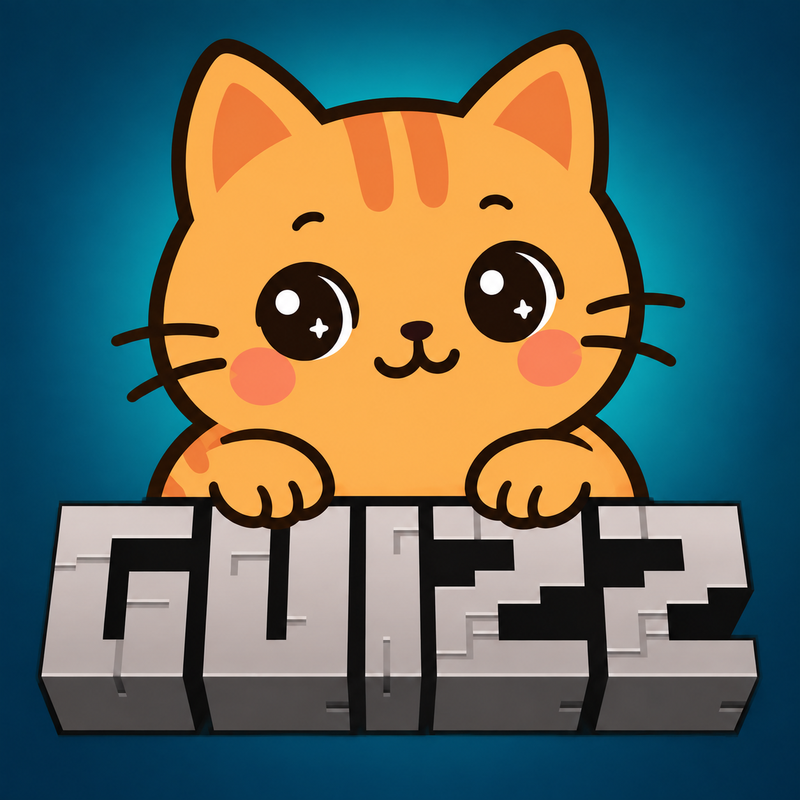

WORLD RESCUEpor Guizz
MINECRAFT BEDROCK
WORLD RESCUEpor Guizz
MINECRAFT BEDROCK
FERRAMENTA LOCAL · POR GUIZZ
Seu mundo de volta ao jogo.
Analise uma cópia exportada do seu mundo Bedrock. Se os motivos encontrados forem reparáveis, o site cria outro arquivo sem substituir o original.
SEM API · PROCESSAMENTO NO SEU NAVEGADOR

01
Escolha o mundo
Selecione um arquivo .mcworld exportado pelo Minecraft.
Aguardando um arquivo .mcworld